Design, Build, Ship (MPCS 51238), assignment 1: Accelerated Prototyping. Autumn 2026.
I’m Gabriela: fisheries engineer, former business intelligence analyst, and M.S. student in Computational Analysis and Public Policy at the University of Chicago. These are 25 versions of my landing page. I kept all 25 as they were made: each one tests a different idea about who the page is for and how to tell my story.
Each cord is one version, and its knots record the version number in base ten, the way Andean khipus kept records. Brown cords went wide, indigo cords combine, red cords converge. Select any cord to open that version.
Hiring managers and research leads in Chicago working on policy research, civic tech, environmental data or applied analytics, plus community partners and faculty.
That I turn messy, real-world records into tools people use to decide, and that I have done it in three countries and two languages.
Open a project, then get in touch.
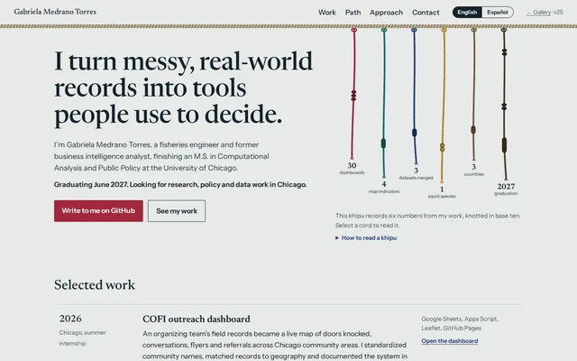
The khipu started as one of fifteen experiments in round 1 (v08) and became the signature of my final page. The cords at the top of this gallery are a khipu too: each one records its version number.
For centuries, record keepers in the Andes stored information on khipus: cords of cotton or camelid fiber hanging from a main cord. Numbers were tied in a base-ten positional system. Clusters of single knots count tens, hundreds and thousands by their height on the cord, a long knot near the end counts units from two to nine by its turns, a figure-eight knot means one, and an empty stretch of cord means zero. Specialists called khipukamayuq made and read them, keeping census counts, tribute and storehouse records for the Inca state.
Fifteen directions, each built from a real artifact of my life instead of a generic style: a research paper, a ship’s log, a BI report, a CTA map, a fish tin, a sonar screen, a khipu, a canvassing sheet. Each one changes the layout, mood and audience, not just colors or fonts.
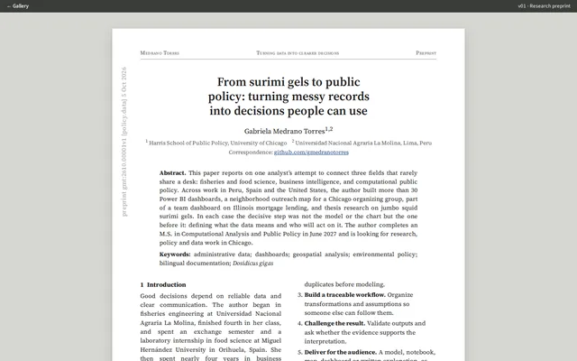
v01The page as an academic paper: abstract, methods, a results table and a timeline figure. Credible for research labs, but slow to read, and the projects end up buried in Table 1.
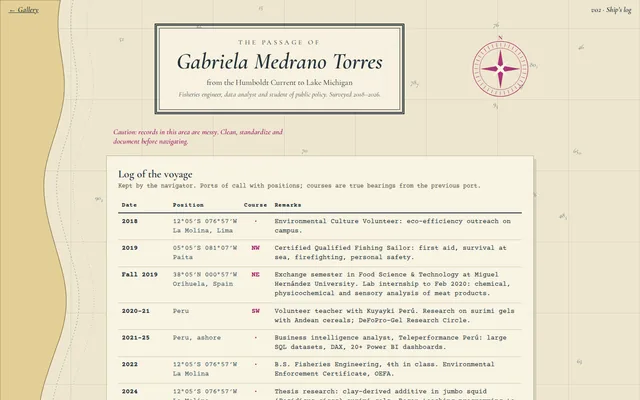
v02My fishing-sailor certificate as the frame: a nautical chart with a dated log of every port and signal flags that spell HOLA. Memorable and true; the log flattens everything into equal rows.
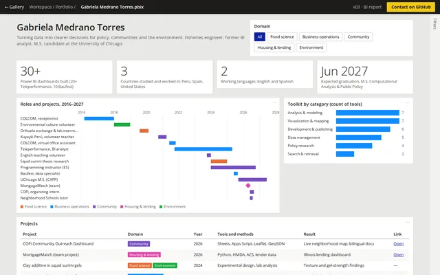
v03A working Power BI-style report with domain slicers, a timeline of roles and a project matrix. It shows the skill instead of describing it, but it feels like work, not like meeting a person.
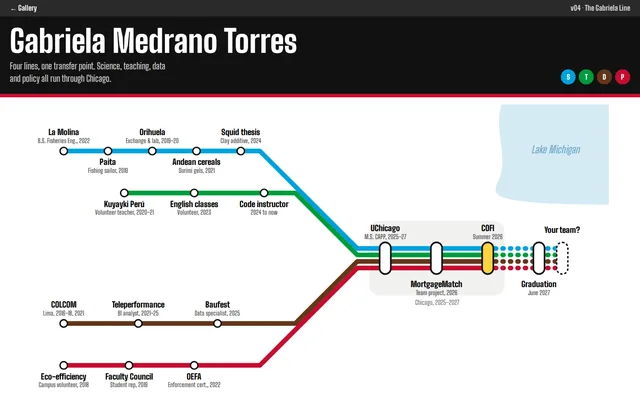
v04A CTA-style system map where science, teaching, data and policy lines converge in Chicago. The strongest Chicago idea; the map takes over the page.
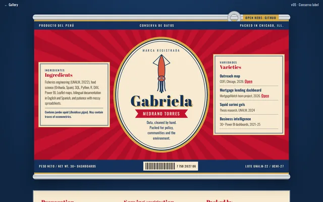
v05A vintage Peruvian fish-tin label. Tests humor and Peruvian identity at full volume. Fun, but the jokes compete with the substance.
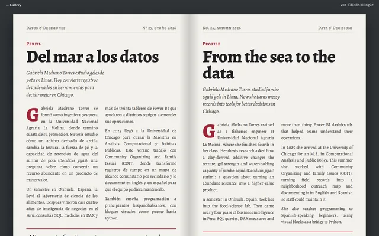
v06A magazine spread with the same profile in Spanish and English, side by side. Shows the bilingual skill, but doubles the reading for everyone.
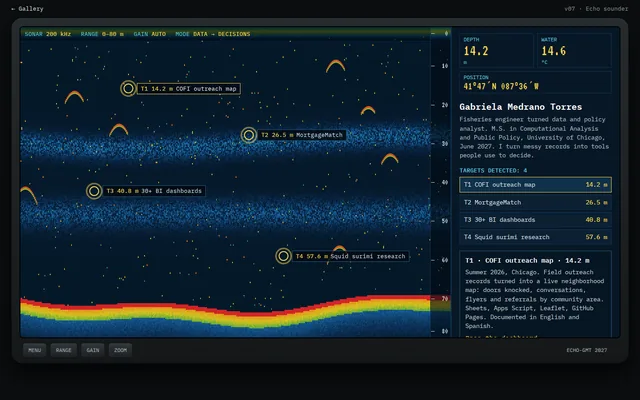
v07A live echogram where projects show up as fish at depth. The most immersive version; too dark and dense for a recruiter in a hurry.
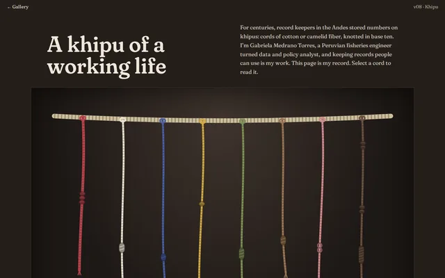
v08An interactive khipu: each cord encodes a real number from my work in base-ten knots. Uniquely mine and honest about its data, but it needs a legend to be readable.
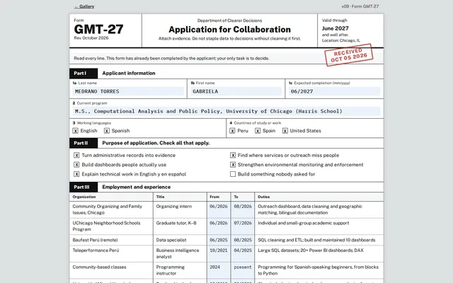
v09A parody government application form. The employment table is genuinely scannable, but the satire risks undercutting me with a policy audience.
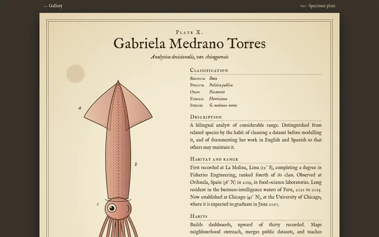
v10A Victorian natural-history plate with an engraved jumbo squid. Beautiful, but the antique styling distances the reader from current work.
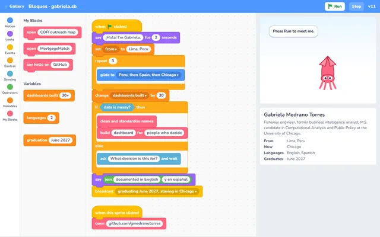
v11A block-programming editor whose script runs and makes a squid sprite talk. Right for education partners; too childlike for most hiring managers.
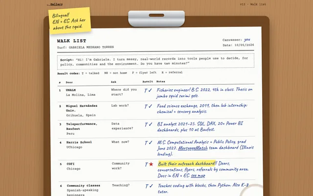
v12A COFI canvassing sheet on a clipboard, one door per chapter of my story. Warm and specific to organizing; the handwriting slows reading down.
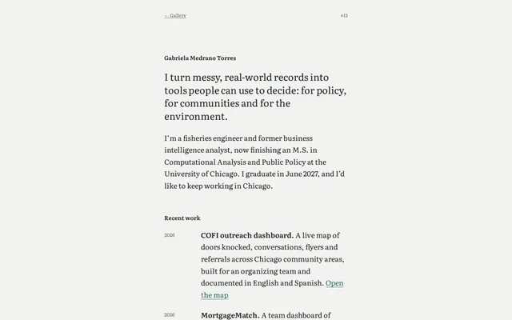
v13A calm page with no decoration at all. The most readable baseline, and the most forgettable.
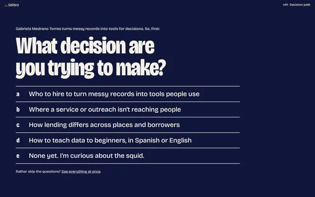
v14One question at a time: visitors pick a decision and get the matching evidence. Fast routing to proof, but it adds clicks before anything substantive.
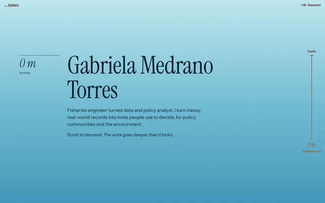
v15A scroll from the surface to 1,000 m with a depth gauge, using the squid’s daily migration as a metaphor. Now in English and Spanish, with a language switch. A long scroll for little content.
Five hybrids that pair the strongest ingredients from round 1, to see which combinations survive contact with a real reader.
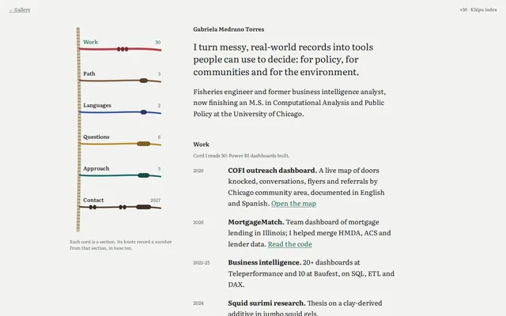
v16v13’s calm column with v08’s khipu turned into the table of contents. Identity plus readability works; sideways cords are hard to read.
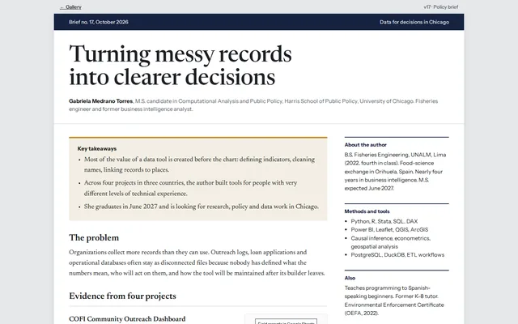
v17v01’s rigor plus v03’s evidence, as a two-column brief with takeaways and small figures. Credible and scannable; its Newsreader and Instrument Sans pairing made it to the final.
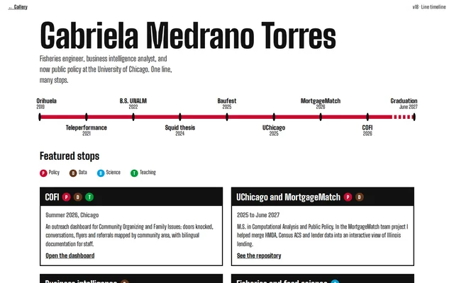
v18v04’s transit line shrunk to a horizontal timeline over station-sign project cards. A clear path, but everything starts to look like a timeline.
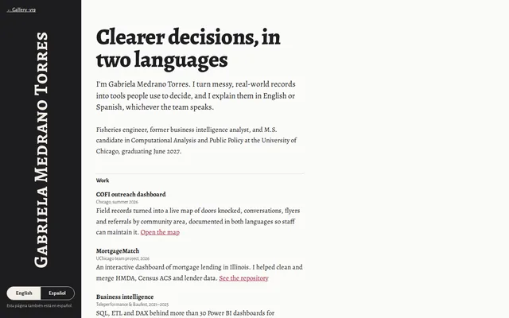
v19v06’s bilingual idea as an English/Spanish switch instead of parallel text. Halves the reading load, as long as the switch is easy to find.
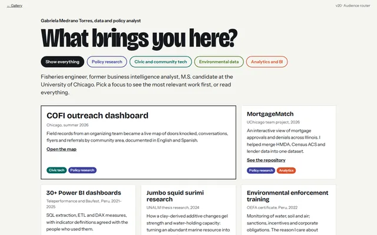
v20v14’s routing as optional chips that reorder v03-style evidence. Helps visitors find relevant proof without putting a gate in front of it.
One direction, refined five times: the khipu from v08, the brief from v17, the language switch from v19. Each step fixes the biggest problem left in the one before.
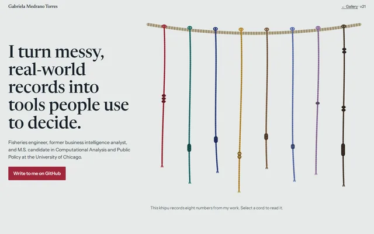
v21v08’s khipu in the hero with v17’s brief structure and typography. The khipu takes the whole first screen and the evidence arrives too late.
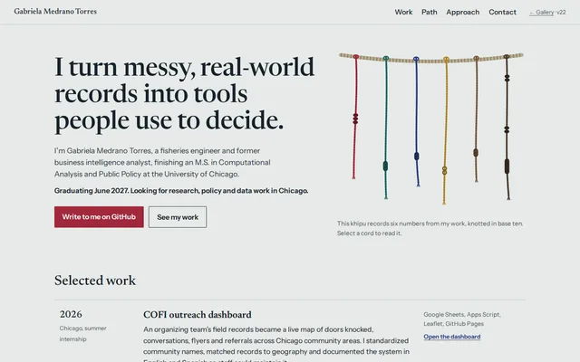
v22The hero shrinks to a statement and a compact khipu, and selected work moves directly under it. The takeaways box goes, since it repeated the hero.
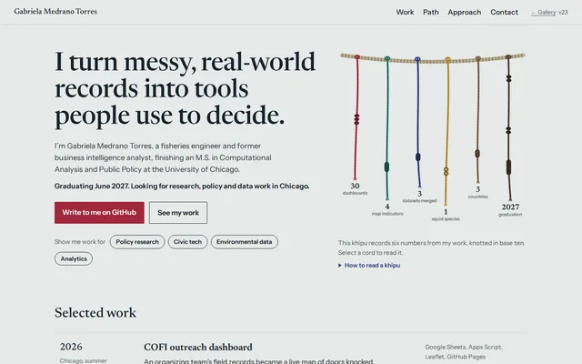
v23Each cord gets a label, a legend explains the knots, and hovering a cord highlights the project it counts. v20’s audience chips come back.
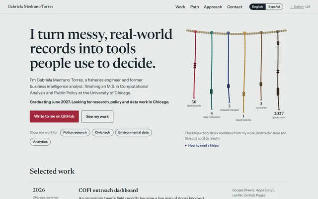
v24A full English/Spanish toggle from v19, language attributes, keyboard support, reduced motion and a mobile layout.
v25The chips are gone because they repeated the work list. The khipu hangs from the header cord, the path becomes one knotted cord of years, and print styles are in.